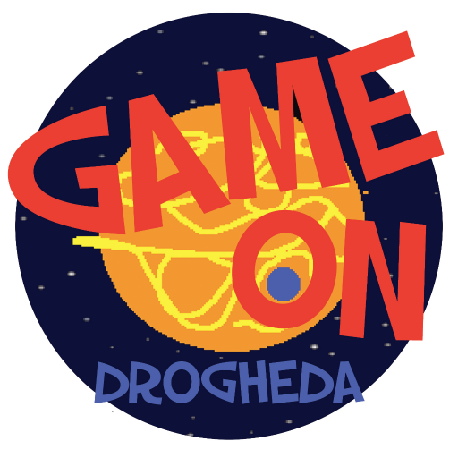
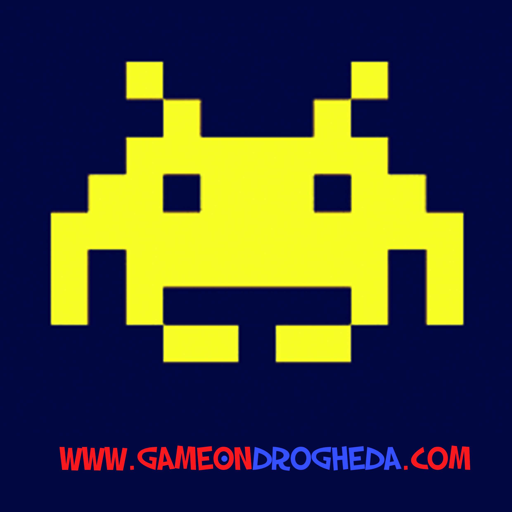
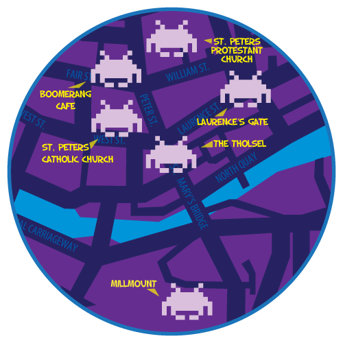

Droichead Arts Centre and CoderDojo present
GAME ON
  
GAME ON is a two-day event merging traditional artforms with digital technologies. In the forty years since the introduction of the first home video game, this field has attracted exceptional artistic talent. A blend of traditional art forms like painting, writing, sculpture, music, storytelling and cinematography, video games offer artists a previously unprecedented method of communicating with and engaging audiences.
There are a wide array of projects made by the young developers of CoderDojo Drogheda, such as Games, Websites, Apps & More.
To find out more about the amazing Games, Click on the Game On Games button above!
Don't forget to check out the Game On Drogheda website made by Ellen Pender & Marc Kiely! http://www.gameondrogheda.com/
Also, this Drogheda Arts Festival App was developed by Conor O'Hara from CoderDojo Drogheda, with help from CoderDojo Drogheda mentors Graham, Mark, Brendan & others and creative guidance from Vivienne of the Droichead Arts Centre.
This event is the outcome of an Artist in Residence programme with CoderDojo, Drogheda since September 2013. Artist Vivienne Byrne and a team of artists and programming mentors have worked with young coders to respond to the theme ‘Real and Imaginative Worlds’. They combined both technical and creative expertise to develop original games, stories, sculptures, animations and music compositions inspired by our heritage town.
This project was developed through a partnership between Droichead Arts Centre and CoderDojo , Drogheda with kind support from CREATE under the Artist in the Community Scheme. We are also grateful for the generous support from Mcor, DKIT.